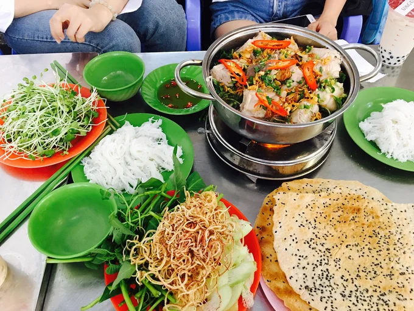
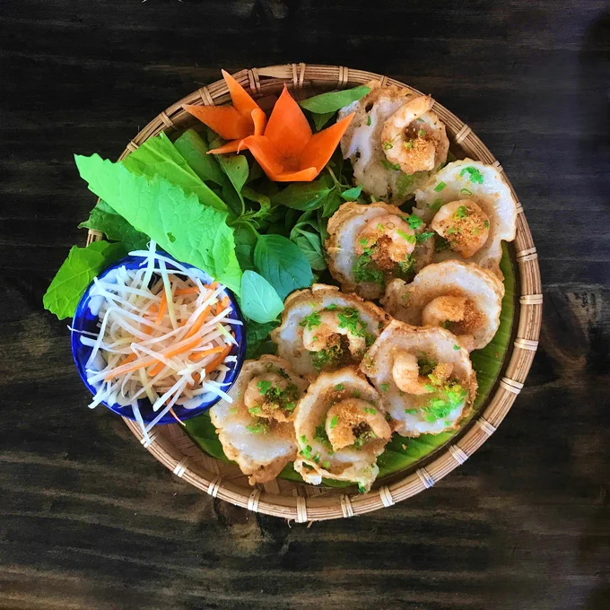
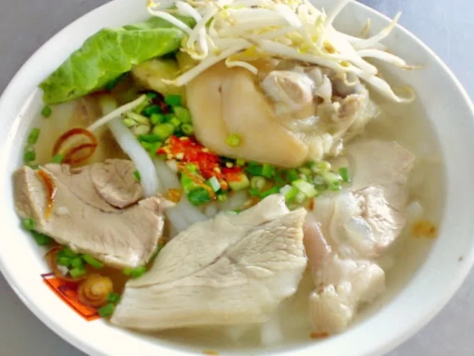
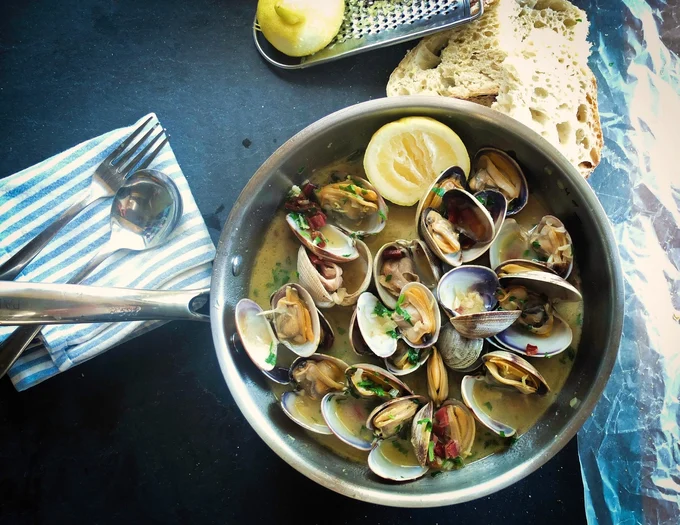
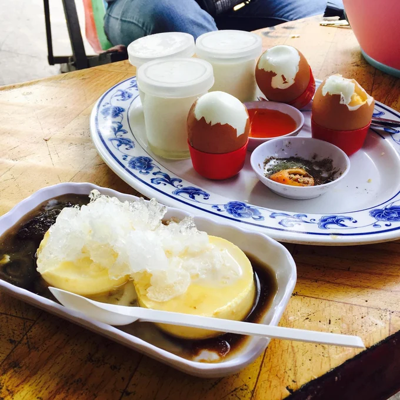

5 Món Ngon Vũng Tàu Bạn Phải Ăn Thử Một Lần Trong Đời

Nguồn ảnh: Unsplash
Bạn không phải là “fan cứng” của Vũng Tàu nếu chưa thưởng thức hết 5 món ngon Vũng Tàu có trong bài viết này.Vũng Tàu chẳng những “hớp hồn” du khách bằng nắng vàng, cát trắng và biển xanh, Vũng Tàu còn là thiên đường ẩm thực với vô số món ngon hấp dẫn. Hãy cùng #vungtautattantat lưu lại danh sách đặc sản dưới đây để dành… ăn dần trong những chuyến vi vu cuối tuần nhé.
1. Lẩu cá đuối
Cá đuối là loại cá thịt dai, có phần xương giòn mềm. Lẩu cá đuối có vị chua chua ngọt ngọt, do được nấu cùng với măng chua rừng, ăn kèm bún, rau thơm, bạc hà, nộm hoa chuối, rau mầm…. Vào những ngày trời mưa lâm râm, ăn một miếng cá đuối chấm nước mắm ớt, uống một ngụm bia tươi mát lạnh thì phải nói là hết ý. Cuộc chuyện trò cùng bạn bè cũng nhờ vậy mà đậm đà hơn.
Các quán lẩu cá đuối Vũng Tàu ngon:
- Lẩu cá đuối Hoàng Minh: 44, Trương Công Định, P. 3, Vũng Tàu
- Lẩu cá đuối Út Mười: 16A, Trương Công Định, P.1, Vũng Tàu
- Lẩu cá đuối Trận: 42, Nguyễn Trường Tộ, P.3, Vũng Tàu
- Lẩu cá đuối Ngon 15: 15, Nguyễn Trường Tộ, P.3, Vũng Tàu
2. Bánh khọt Gốc Vú Sữa
Bánh khọt Vũng Tàu ngon, đó là chuyện đương nhiên. Nhưng nếu muốn thưởng thức bánh khọt chuẩn vị xứ biển, bạn nhất định phải ghé đến cửa hàng Bánh Khọt Gốc Vú Sữa - nằm đối diện tiệm Bánh Kẹp - Bánh Bông Lan Gốc Cột Điện. Bánh khọt ở đây có lớp vỏ giòn vàng ươm, ôm lấy phần nhân tôm “siêu to, khổng lồ”, cuốn rau sống rồi chấm với nước mắm chua ngọt “thần thánh”. Đảm bảo mọi giác quan của bạn sẽ bừng tỉnh ngay sau miếng bánh thơm ngon đầu tiên.
Điểm trừ duy nhất của Bánh Khọt Gốc Vú Sữa chính là quán rất đông khách vào cuối tuần. Bạn thường phải chờ khá lâu thì mới có chỗ ngồi. Để được thưởng thức món ngon Vũng Tàu đặc sắc thì vài chục phút chờ đợi thì có sá gì, nhỉ?
Mách bạn nơi bán bánh khọt Vũng Tàu ngon:
- Bánh khọt Gốc Vú Sữa: 14, Nguyễn Trường Tộ, P. 2, Vũng Tàu
- Bánh khọt Cô Ba Vũng Tàu: 1, Hoàng Hoa Thám, P. 3, Vũng Tàu
- Bánh khọt Miền Đông: 59, Bà Triệu, P. 4, Vũng Tàu
- Bánh khọt Cây Sung: 19, Hoàng Hoa Thám, P. 3, Vũng Tàu
3. Bánh canh Long Hương
Làm ấm dạ dày bằng một tô bánh canh nóng hổi ở tiệm Long Hương - nằm trước cổng chào thành phố Bà Rịa - Vũng Tàu - là thói quen của nhiều du khách. Đặc sản Vũng Tàu nổi tiếng nhất ở đây là bánh canh giò heo, với phần nước dùng ngọt thanh, được ninh từ xương ống, cá biển và tôm. Sợi bánh canh Long Hương được làm từ bột lọc nên mềm dai và rất thấm gia vị. Bạn có thể chọn giò heo, thịt nạc, sườn hoặc thập cẩm ba loại thịt để ăn cho “đã thèm” đều được. Giá dao động khoảng 35.000đ đến 55.000đ/tô.
4. Ốc
Ăn ốc là thú vui tao nhã của giới thực thần khi đi du lịch biển; và bản đồ ẩm thực Vũng Tàu cũng không ngoại lệ. Bên cạnh ưu điểm tươi ngon, ốc Vũng Tàu còn được cộng điểm bởi giá thành phải chăng và đa dạng chủng loại. Từ ốc móng tay xào tỏi, ốc len xào dừa, ốc mỡ xào bơ đến hàu nướng phô mai, ốc hương hấp xả, sò dương nướng mỡ hành, tất cả đều là món ngon Vũng Tàu nổi bật, cực “hợp cạ” với dân “bợm”.
Những quán ốc ngon ở Vũng Tàu:
- Ốc Tự Nhiên: 34, Trần Phú, P.1 (chi nhánh 1) | 23, Phạm Ngọc Thạch, P.Phước Hưng (chi nhánh 2) | 32, Lê Quý Đôn, P. 1 (chi nhánh 3), Vũng Tàu
- Ốc Hiền: 121, Lý Tự Trọng, Vũng Tàu
- Ốc Bình: 221/18 Trương Công Định, Vũng Tàu
5. Trứng lòng đào và bánh flan
Bạn có thể thưởng thức combo trứng lòng đào và bánh flan huyền thoại, tại quán Sữa chua Cô Tiên, nằm trên đường đi lên ngọn Hải Đăng. Đây là cách nạp thêm năng lượng tuyệt vời, để tiếp tục hành trình chinh phục một trong những địa điểm sống ảo nổi tiếng nhất Vũng Tàu. Quán cũng có bán nhiều món ăn vặt hấp dẫn khác như bánh tráng trộn, cá viên chiên, bánh bông lan trứng muối, xoài lắc, bánh tráng me… với giá hết sức “hạt dẻ”.